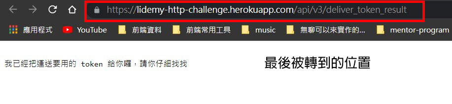
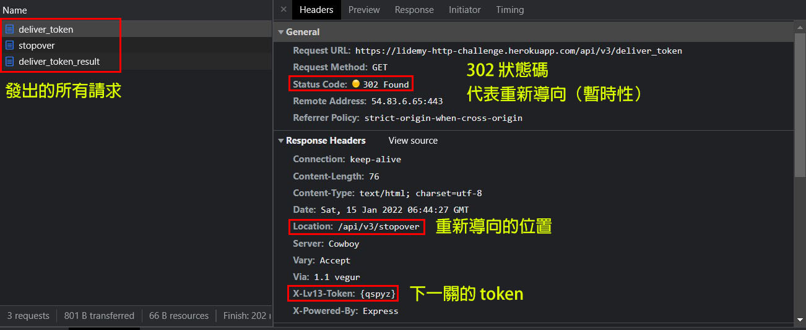

來自 Lidemy 上的小遊戲：Lidemy HTTP Challenge，寫一篇簡短的攻略文與心得。
這份遊戲其實能學到蠻多東西的，很推薦沒玩過的人可以去玩玩看。
第一關
1. 開場
一開始的 token 為 {GOGOGO}，發一個 GET 請求就 OK 了：
1 | request('https://lidemy-http-challenge.herokuapp.com/lv1?token={GOGOGO}', |
response：
1 | 啊...好久沒有看到年輕人到我這個圖書館了，我叫做 lib，是這個圖書館的管理員 |
2. 自我介紹
記得把剛剛的 API 網址給記下來，之後會用到。
接著就依照題目說的，帶上 &name=xxx 就可以了：
1 | request('https://lidemy-http-challenge.herokuapp.com/lv1?token={GOGOGO}&name=PeaNu', |
response：
1 | 啊...原來你叫 PeaNu 啊！下一關的 token 是 {HellOWOrld} |
第一關就到這邊結束，進到下一關囉。
第二關
1. 開場
利用第一關給的 token：{HellOWOrld}，發一個 GET 請求就 OK 了：
1 | request('https://lidemy-http-challenge.herokuapp.com/lv2?token={HellOWOrld}', |
response：
1 | 我前陣子在整理書籍的時候看到了一本我很喜歡的書，可是現在卻怎麼想都想不起來是哪一 |
2. 輸入正確的 id
接下來要用 &id=54~58 發出 GET 請求，其中會有一個是正確的 id，也就是 56：
1 | request('https://lidemy-http-challenge.herokuapp.com/lv2?token={HellOWOrld}&id=56', |
response：
1 | 啊！就是這本書，太謝謝你了。下一關的 token 為：{5566NO1} |
一樣順利拿到 token，進到下一關！
備註：試著用第一關給的 API，去查詢 id=56 的書，會發現管理員在找的書為「5566 - 認真」，正好對應了 {5566NO1}。
第三關
1. 開場
利用第二關給的 token：{5566NO1}，發一個 GET 請求就 OK 了：
1 | request('https://lidemy-http-challenge.herokuapp.com/lv3?token={5566NO1}', |
response：
1 | 真是太感謝你幫我找到這本書了！ |
2. 新增書籍
這時候就要用到剛剛的 API 了，請閱讀裡面的說明，然後用 POST 把書新增到圖書系統裡：
1 | const API_ENDPOINT_V1 = 'https://lidemy-http-challenge.herokuapp.com/api' |
我們要用「form 表單」的格式來傳送，所以在 header 加上 'Content-type': 'application/x-www-form-urlencoded'
response：
1 | {"message":"新增成功","id":"1989"} |
接著把取得的 id 加上去就可以了：
1 | request('https://lidemy-http-challenge.herokuapp.com/lv3?token={5566NO1}&id=1989', |
response：
1 | 這樣子讀者就能趕快看到這本新書了，謝謝！下一關的 token 為 {LEarnHOWtoLeArn} |
第四關
1. 開場
利用第三關給的 token：{LEarnHOWtoLeArn}，發一個 GET 請求就 OK 了：
1 | request('https://lidemy-http-challenge.herokuapp.com/lv4?token={LEarnHOWtoLeArn}', |
response：
1 | 我翻了一下你之前幫我找的那本書，發現我記錯了...這不是我朝思暮想的那一本。 |
2. 找出書本的 id
這邊有兩種方法，一種是在 API 上加上參數，一種是把整筆抓下來後自己找。先示範第一種：
1 | /* |
response：
1 | [ |
第二種，整筆抓下來再搜尋：
1 | const API_ENDPOINT_V1 = 'https://lidemy-http-challenge.herokuapp.com/api' |
response：
1 | [ { id: 79, name: '世界末日與冷酷異境', author: '村上春樹', ISBN: '9571313408' } ] |
所以最後拿 id=79 去發請求就行囉：
1 | request('https://lidemy-http-challenge.herokuapp.com/lv4?token={LEarnHOWtoLeArn}&id=79', |
response：
1 | 沒錯！這次我很確定了，就是這本！下一關的 token 為 {HarukiMurakami} |
第四關結束，進入下一關。
備註：token：{HarukiMurakami} 就是村上春樹的名字。
第五關
1. 開場
利用第四關給的 token：{HarukiMurakami}，發一個 GET 請求就 OK 了：
1 | request('https://lidemy-http-challenge.herokuapp.com/lv5?token={HarukiMurakami}', |
response：
1 | 昨天有個人匆匆忙忙跑過來說他不小心捐錯書了，想要來問可不可以把書拿回去。 |
2. 刪除書本
按照題目說的，用 DELETE 請求去把 id 是 23 的書給刪除：
1 | const API_ENDPOINT_V1 = 'https://lidemy-http-challenge.herokuapp.com/api' |
response：
1 | {"message":"\n咦...是刪掉了沒錯，但總覺得哪裡怪怪的，算了，先這樣吧！下一關的 token 為 {CHICKENCUTLET}\n"} |
第五關結束，進入下一關。
備註：被刪除的書 其實是雞排妹的寫真集，所以 token 才叫做 {CHICKENCUTLET}（雞排）。
第六關
1. 開場
利用第五關給的 token：{CHICKENCUTLET}，發一個 GET 請求就 OK 了：
1 | request('https://lidemy-http-challenge.herokuapp.com/lv6?token={CHICKENCUTLET}', |
response：
1 | 我終於知道上次哪裡怪怪的了！ |
2. 取得使用者資訊
這邊先參考新的 API 文件說明，裡面提到的驗證其實就是 HTTP 中的「Basic Authentication」，詳細可以參考 這篇文章。
所以這邊得依照格式把 admin:admin123 做 「base64」編碼，再帶上 Authorization 的 header：
1 | const API_ENDPOINT_V2 = 'https://lidemy-http-challenge.herokuapp.com/api/v2' |
備註：關於 Buffer 的用法可以參考 Node 中的 buffer 模組
response：
1 | {"username":"admin","email":"lib@lidemy.com"} |
最後把 email 帶到參數裡這關就 pass 了：
1 | request('https://lidemy-http-challenge.herokuapp.com/lv6?token={CHICKENCUTLET}&email=lib@lidemy.com', |
response：
1 | 對對對，就是這個，這樣才對嘛！下一關的 token 為 {SECurityIsImPORTant} |
備註：{SECurityIsImPORTant} = 安全性很重要。
第七關
1. 開場
利用第六關給的 token：{SECurityIsImPORTant}，發一個 GET 請求就 OK 了：
1 | request('https://lidemy-http-challenge.herokuapp.com/lv7?token={SECurityIsImPORTant}', |
response：
1 | 那邊的工程師說系統整個修復完成了，剛好昨天我們發現有一本書被偷走了... |
2. 刪除書本
就是用 DELETE 去把書本刪掉而已：
1 | const API_ENDPOINT_V2 = 'https://lidemy-http-challenge.herokuapp.com/api/v2' |
1 | {"message":"\n希望下一次進這本書的時候不會再被偷走了。下一關的 token 為 {HsifnAerok}\n"} |
順利進到下一關。
備註：這本被偷走的書其實是「跟著月亮走：韓國瑜的夜襲精神與奮進人生」，所以把 {HsifnAerok} 倒過來就會發現是 {koreAnfisH}（韓國魚）
1 | {"id":89,"name":"跟著月亮走：韓國瑜的夜襲精神與奮進人生","author":"韓國瑜","ISBN":"9789571376882"} |
第八關
1. 開場
利用第七關給的 token：{HsifnAerok}，發一個 GET 請求就 OK 了：
1 | request('https://lidemy-http-challenge.herokuapp.com/lv8?token={HsifnAerok}', |
response：
1 | 我昨天在整理書籍的時候發現有一本書的 ISBN 編號跟系統內的對不上，仔細看了一下發現我當時輸入系統時 key 錯了 |
2. 找出填錯資訊的書本
這邊一樣可以用 API 參數來找，或者是整筆抓下來再搜尋。先示範第一種：
1 | const API_ENDPOINT_V2 = 'https://lidemy-http-challenge.herokuapp.com/api/v2' |
response：
1 | [ |
（有蠻多筆符合的，所以抓下來後還是要再搜尋一下比較清楚）
第二種，整筆抓下來搜尋：
1 | const API_ENDPOINT_V2 = 'https://lidemy-http-challenge.herokuapp.com/api/v2' |
response：
1 | [ |
3. 修正書本資訊
知道是哪一本書之後，用 PATCH 去修改 ISBN 的值就好囉：
1 | const API_ENDPOINT_V2 = 'https://lidemy-http-challenge.herokuapp.com/api/v2' |
response：
1 | {"message":"\n希望之後他們能引進語音輸入系統，我就只要講講話就好。下一關的 token 為 {NeuN}\n"} |
第八關結束，進到下一關。
備註：{NeuN} 是德文的 9。
第九關
1. 開場
利用第八關給的 token：{NeuN}，發一個 GET 請求就 OK 了：
1 | request('https://lidemy-http-challenge.herokuapp.com/lv9?token={NeuN}', |
response：
1 | API 文件裡面有個獲取系統資訊的 endpoint 你記得嗎？ |
2. 取得系統資訊
這邊要多帶上兩個 header，分別是 X-Library-Number 跟 User-Agent。
X-Library-Number 這種以 X 為前綴的代表是自定義的 header，不在 HTTP 規範中，不加也沒關係，但這裡的伺服器需要識別，所以得加上這個欄位。
而 User-Agent 是用來紀錄用戶端的「瀏覽器資訊」跟「作業系統」等等的資訊，所以這邊要把它改成是 IE6 的內容。直接上網查就可以找到了：Changing User Agent to IE6 or lower for curl call
原始碼：
1 | const API_ENDPOINT_V2 = 'https://lidemy-http-challenge.herokuapp.com/api/v2' |
response：
1 | {"message":"success","version":"1A4938Jl7","owner":"lib","createdAt":"121290329301"} |
這裡補充一下，「改 User-Agent 的內容」是在不使用「瀏覽器」的前提下才可以做到的事情。如果你是透過瀏覽器來發 request 的話是沒辦法改的，詳細可以參考 從遊戲來認識 CORS 與瀏覽器的限制。
接著把 1A4938Jl7 帶到參數裡就解決第九關了：
1 | request('https://lidemy-http-challenge.herokuapp.com/lv9?token={NeuN}&version=1A4938Jl7', |
response：
1 | 限制這麼多都被你突破了，真有你的。要不要考慮以後來我們圖書館當工程師啊？下一關的 token 為 {duZDsG3tvoA} |
備註：{duZDsG3tvoA} 是 半島鐵盒 的 youtube 編號。
第十關
1. 開場
利用第九關給的 token：{duZDsG3tvoA}，發一個 GET 請求就 OK 了：
1 | request('https://lidemy-http-challenge.herokuapp.com/lv10?token={duZDsG3tvoA}', |
response：
1 | 時間過得真快啊，今天是你在這邊幫忙的最後一天了。 |
2. 猜出正確的數字
就是根據題目的敘述來猜就行了，正確的數字為 9613：
1 | request('https://lidemy-http-challenge.herokuapp.com/lv10?token={duZDsG3tvoA}&num=9613', |
response：
1 | 很開心在這裡的時光能有你一起陪伴，讓我的生活不再那麼一成不變，很開心認識你，下次有機會再一起玩吧！ |
第十一關
1. 開場
利用第十關給的 token：{IhateCORS}，發一個 GET 請求就 OK 了：
1 | const request = require('request') |
response：
1 | 嘿！很開心看到你願意回來繼續幫忙，這次我們接到一個新的任務，要跟在菲律賓的一個中 |
記得把 API 網址存起來。
2. 打招呼
接著就按照 API 文件的說明，發一個「打招呼」的 request：
1 | const API_ENDPOINT = 'https://lidemy-http-challenge.herokuapp.com/api/v3' |
response：
1 | 您的 origin 不被允許存取此資源，請確認您是從 lidemy.com 送出 request。 |
這時候會跟你說你的位置不允許，所以我們又得再加一些設定了。還記得 第九關 的套路嗎？
這裡用一樣的做法就可以了：
1 | const API_ENDPOINT = 'https://lidemy-http-challenge.herokuapp.com/api/v3' |
response：
1 | Hello! 下一關的 token 為 {r3d1r3c7} |
備註：再次提醒，「改 Origin 的」和「改 User-Agent」一樣都是建立在不使用「瀏覽器」的前提下才能做到的事。
第十二關
1. 開場
利用第十一關給的 token：{r3d1r3c7}，發一個 GET 請求就 OK 了：
1 | const request = require('request') |
response：
1 | 打完招呼之後我們要開始送一些書過去了，不過其實運送沒有你想像中的簡單，不是單純的 A 到 B 而 |
2. 取得運送 Token
這時候一樣按照 API 文件來發出「獲取運送 token」的 request：
1 | const API_ENDPOINT = 'https://lidemy-http-challenge.herokuapp.com/api/v3' |
response：
1 | 我已經把運送要用的 token 給你囉，請你仔細找找 |
當時我的內心充滿了問號，還以為是在玩什麼反白梗之類的，但很遺憾：不要瞎掰好嗎。
所以就來調查一下吧，我們先試著從 headers 來看能不能找出一點蛛絲軌跡：
1 | const API_ENDPOINT = 'https://lidemy-http-challenge.herokuapp.com/api/v3' |
response：
1 | { |
嗯…沒有什麼有用的資訊，所以接著改看請求的 headers 吧：
1 | const API_ENDPOINT = 'https://lidemy-http-challenge.herokuapp.com/api/v3' |
response：
1 | { |
哦哦！原來是被「轉址」了阿，難怪一開始會說：
像轉機那樣，A 到 C，C 才到 B，中間會經過一些轉運點才會到達目的地…
這表示我們想要的資訊說不定就放在被轉址「之前的位置」，只要能夠找到原本的位置就行了。
這邊有兩種作法，我先講比較簡單的：利用瀏覽器

這時候會看到直接被重新導向到 /deliver_token_result 的位置
- 接下來請打開 F12，並切換到「Network」的欄位，重新輸入正確的 API 網址送出。最後應該就能看到以下資訊：

備註：狀態碼的意思可以參考我寫的 HTTP 懶人包
所以我們一共經過了三個地方：deliver_token => stopover => deliver_token_result
而 token 確實就放在 deliver_token 的 response headers 中，只是因為剛剛被重新導向到 deliver_token_result 所以才看不到。
有興趣的人可以自己把每個 request 的內容打開來看，這邊我就不貼圖片了，因為我懶。順道一提「stopover」是「中途停留」的意思。
接下來說明第二種作法：在 Node.js 中阻止重新導向
因為我是用 request 來發送請求的，所以要參考它的官方文件說明：
followRedirect - follow HTTP 3xx responses as redirects (default: true). This property can also be implemented as function which gets response object as a single argument and should return true if redirects should continue or false otherwise.
簡單來說就是你可以設定一個 followRedirect 的「option」，只要讓這個 function 回傳 false 就不會被自動轉址了：
1 | const API_ENDPOINT = 'https://lidemy-http-challenge.herokuapp.com/api/v3' |
response：
1 | 302 |
就跟剛剛在瀏覽器看到的一樣，得到 302 重新導向的狀態碼，導向的位置也是 stopover。
總而言之，看你喜歡哪種方法就用哪種，最後就順利拿到 token 囉！
第十三關
1. 開場
利用第十二關給的 token：{qspyz}，發一個 GET 請求就 OK 了：
1 | request('https://lidemy-http-challenge.herokuapp.com/lv13?token={qspyz}', |
response：
1 | 太好了！自從你上次把運送用的 token 拿回來以後，我們就密切地與菲律賓在交換書籍 |
2. 查看系統日誌
一樣先按照 API 文件來發一個「獲取系統日誌」的請求：
1 | const API_ENDPOINT = 'https://lidemy-http-challenge.herokuapp.com/api/v3' |
response：
1 | 此 request 不是來自菲律賓，禁止存取系統資訊。 |
這代表 server 會檢查使用者的 IP 地址，所以我們可以透過「proxy（代理伺服器）」來發送請求。
所以只要找到一個菲律賓的 proxy 來做設定就可以了。不過這邊我弄了老半天就是不行，每當我設定好 proxy 的時候網路就會掛掉，我也不確定問題出在哪。如果有人知道原因的話請務跟告訴我一下QQ。
因此這裡改用另外一種解法：設定 X-Forwarded-For
簡單來說 server 可以透過這個 header 來判斷使用者的 IP 地址，因此只要把 IP 地址設成菲律賓的位置就行了：
1 | const API_ENDPOINT = 'https://lidemy-http-challenge.herokuapp.com/api/v3' |
response：
1 | [ |
千辛萬苦地進到下一關（汗
第十四關
1. 開場
利用第十三關給的 token：{SEOisHard}，發一個 GET 請求就 OK 了：
1 | request('https://lidemy-http-challenge.herokuapp.com/lv14?token={SEOisHard}', |
response：
1 | 跟那邊的溝通差不多都搞定了，真是太謝謝你了，關於這方面沒什麼問題了！ |
2. 檢查首頁內容
這裡顯然要檢查一下首頁的部分，所以一樣先按照 API 文件來發一個「獲取首頁內容」的請求：
1 | request({ |
response：
1 | <html> |
果然看不出個所以然。回想一下剛剛的敘述「難道說他們偷偷動了一些手腳？讓 Google 搜尋引擎 看到的內容跟我們看到的不一樣？」
所以換句話說要讓 server「以為」我們是 Google 搜尋引擎，但該怎麼做呢？想想之前的套路，既然都有辦法讓 server 以為是 IE6 了，那搜尋引擎應該也是同樣的道理。
所以試著搜尋：「search engine user agent list」
你就能找到這個 網站
備註：如果想知道更多細節，這個網站 寫的還蠻簡單易懂的。
接下來應該就知道該怎麼做了吧？
1 | request({ |
response：
1 | <html> |
接下來終於來到最後一關囉…
第十五關
利用第十四關給的 token：{ILOVELIdemy!!!}，發一個 GET 請求就 OK 了：
1 | request('https://lidemy-http-challenge.herokuapp.com/lv15?token={ILOVELIdemy!!!}', |
response：
1 | 還真的是我猜的那樣...不過還是要謝謝你幫我們完成這麼多任務！ |
完結撒花啦～
心得
好不容易破關啦！第十五關後的難度真的明顯提升，尤其是第十三關真的讓卡了很久，明明就按照網路上的教學去設定 proxy 了，但就是沒有辦法，最後只好不甘心的上網找正確解答，才發現了 X-Forwarded-For 的解法。
在這個遊戲裡讓我感觸最深的地方還是「執行環境」這件事吧，例如說改「Origin」和「User-Agent」真的讓我大開眼界，這跟我熟悉的「瀏覽器」完全是兩個世界，原來脫離了瀏覽器可以做到的事這麼多，這是我覺得很有趣的地方。
另外還有一點是原來 server 還能從 User-Agent 來判斷是不是爬蟲，甚至還有專屬爬蟲的 User-Agent，原本單純的我完全不知道有這樣神奇的事情存在，很慶幸我能從這個遊戲裡學到這些。
最後很謝謝 Huli 為大家做了這個遊戲，這是一個很有意思也能學到很多東西的遊戲，這個遊戲除了讓我更了解網路世界外，也更了解在前後端這兩個角色在自己的世界裡實際上都做了些什麼。